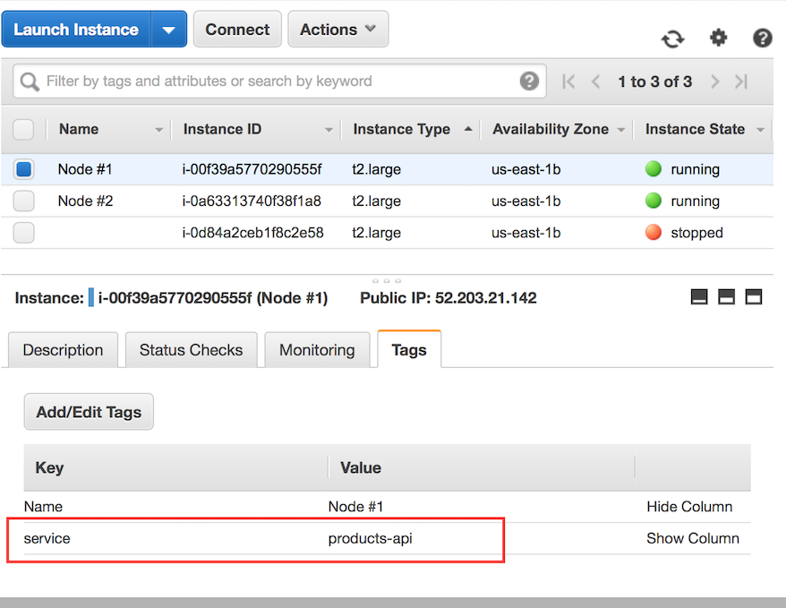
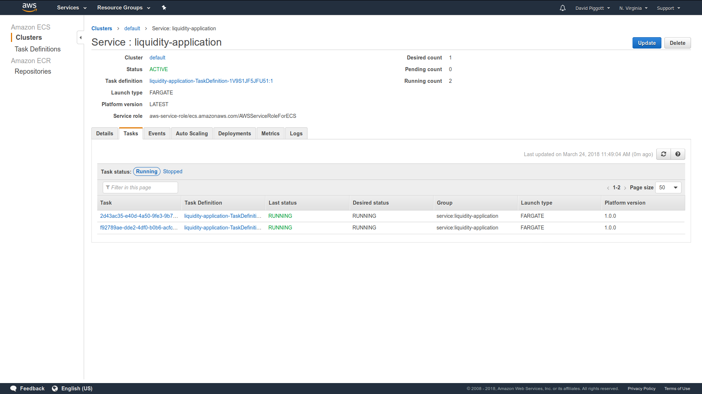

AWS API
This module is community maintained and the Lightbend subscription doesn’t cover support for this module.
If you’re using EC2 directly or you’re using ECS with host mode networking and you’re deploying one container per cluster member, continue to Discovery Method: AWS API - EC2 Tag-Based Discovery.
If you’re using ECS with awsvpcs mode networking (whether on EC2 or with Fargate), continue to Discovery Method: AWS API - ECS Discovery.
ECS with bridge mode networking is not supported.
If you’re using EKS, then you may want to use the ‘Kubernetes API’-based discovery method instead.
Project Info
| Project Info: Akka Discovery AWS | |
|---|---|
| Artifact | com.lightbend.akka.discovery
akka-discovery-aws-api
1.3.0
|
| JDK versions | Adopt OpenJDK 8 with Hotspot Adopt OpenJDK 11 with Hotspot |
| Scala versions | 2.13.10, 2.12.17, 3.1.3 |
| License | |
| Readiness level |
Since 0.11.0, 2018-04-09
|
| Home page | https://akka.io/ |
| API documentation | |
| Forums | |
| Release notes | GitHub releases |
| Issues | GitHub issues |
| Sources | https://github.com/akka/akka-management |
Discovery Method: AWS API - EC2 Tag-Based Discovery
You can use tags to simply mark the instances that belong to the same cluster. Use a tag that has “service” as the key and set the value equal to the name of your service (same value as akka.management.cluster.bootstrap.contact-point-discovery.service-name defined in application.conf, if you’re using this module for bootstrapping your Akka cluster).
Screenshot of two tagged EC2 instances:

Note the tag service -> products-api. It is set on both instances.
Note that this implementation is adequate for users running service clusters on vanilla EC2 instances. These instances can be created and tagged manually, or created via an auto-scaling group (ASG). If they are created via an ASG, they can be tagged automatically on creation. Simply add the tag to the auto-scaling group configuration and ensure the “Tag New Instances” option is checked.
Dependencies and usage (EC2 Tag-Based Discovery)
This is a separate JAR file:
- sbt
val AkkaManagementVersion = "1.3.0" libraryDependencies += "com.lightbend.akka.discovery" %% "akka-discovery-aws-api" % AkkaManagementVersion- Gradle
def versions = [ AkkaManagementVersion: "1.3.0", ScalaBinary: "2.13" ] dependencies { implementation "com.lightbend.akka.discovery:akka-discovery-aws-api_${versions.ScalaBinary}:${versions.AkkaManagementVersion}" }- Maven
<properties> <akka.management.version>1.3.0</akka.management.version> <scala.binary.version>2.13</scala.binary.version> </properties> <dependencies> <dependency> <groupId>com.lightbend.akka.discovery</groupId> <artifactId>akka-discovery-aws-api_${scala.binary.version}</artifactId> <version>${akka.management.version}</version> </dependency> </dependencies>
akka-discovery-aws-api can be used with Akka 2.7.0 or later. You have to override the following Akka dependencies by defining them explicitly in your build and define the Akka version to the one that you are using. Latest patch version of Akka is recommended and a later version than 2.7.0 can be used.
- sbt
val AkkaVersion = "2.7.0" libraryDependencies ++= Seq( "com.typesafe.akka" %% "akka-cluster" % AkkaVersion, "com.typesafe.akka" %% "akka-discovery" % AkkaVersion )- Gradle
def versions = [ AkkaVersion: "2.7.0", ScalaBinary: "2.13" ] dependencies { implementation "com.typesafe.akka:akka-cluster_${versions.ScalaBinary}:${versions.AkkaVersion}" implementation "com.typesafe.akka:akka-discovery_${versions.ScalaBinary}:${versions.AkkaVersion}" }- Maven
<properties> <akka.version>2.7.0</akka.version> <scala.binary.version>2.13</scala.binary.version> </properties> <dependencies> <dependency> <groupId>com.typesafe.akka</groupId> <artifactId>akka-cluster_${scala.binary.version}</artifactId> <version>${akka.version}</version> </dependency> <dependency> <groupId>com.typesafe.akka</groupId> <artifactId>akka-discovery_${scala.binary.version}</artifactId> <version>${akka.version}</version> </dependency> </dependencies>
And in your application.conf:
akka.discovery {
method = aws-api-ec2-tag-based
}
Notes:
-
You will need to make sure that the proper privileges are in place for the discovery implementation to access the Amazon EC2 API. The simplest way to do this is by creating a IAM role that, at a minimum, allows the DescribeInstances action. Attach this IAM role to the EC2 instances that need to access the discovery implementation. See the docs for IAM Roles for Amazon EC2.
-
In general, for the EC2 instances to “talk to each other” (necessary for forming a cluster), they need to be in the same security group and the proper rules have to be set.
-
You can set additional filters (by instance type, region, other tags etc.) in your application.conf file, in the
akka.discovery.aws-api-ec2-tag-based.filterskey. The filters have to be key=value pairs separated by the semicolon character. For example:akka { discovery { aws-api-ec2-tag-based { filters = "instance-type=m1.small;tag:purpose=production" } } } -
By default, this module is configured for clusters with one Akka node per EC2 instance: it separates cluster members solely by their EC2 IP address. However, we can change the default configuration to indicate multiple ports per discovered EC2 IP, and achieve a setup with multiple Akka nodes (i.e. multiple JVMs) per EC2 instance.
akka { discovery { aws-api-ec2-tag-based { ports = [8557, 8558, 8559] # 3 Akka nodes per EC2 instance # note that the above need to be the ports associated with the *Akka Management* extension } } }Note: this comes with the limitation that each EC2 instance has to have the same number of Akka nodes.
-
You can change the default tag key from “service” to something else. This can be done via
application.conf, by settingakka.discovery.aws-api-ec2-tag-based.tag-keyto something else.akka.discovery.aws-api-ec2-tag-based.tag-key = "akka-cluster" -
If your service is running in a docker container, you will need to configure Akka Management with separate IPs for binding and discovery. This is because Akka Management needs to bind to the internal docker IP, but will discover the “host” IP (the EC2 private IP) on the AWS API. See Basic Configuration on how to separate the bind IP from the discovery IP.
Demo:
- A working demo app is available in the integration-test folder.
Discovery Method: AWS API - ECS Discovery
If you’re using ECS with awsvpc mode networking, you can have all task instances of a given ECS service discover each other. If you’re using this module for bootstrapping your Akka cluster that you’ll do so by setting the value of akka.management.cluster.bootstrap.contact-point-discovery.service-name to that of the ECS service itself.
Screenshot of two ECS task instances (the service name is liquidity-application):

Dependencies and usage (ECS Discovery)
There are two “flavours” of the ECS Discovery module.
akka-discovery-aws-api
This uses the mainstream AWS SDK. The advantage here is that if you’ve already got the mainstream AWS SDK as a dependency you’re not now also bringing in the preview SDK. The disadvantage is that the mainstream SDK does blocking IO.
- sbt
val AkkaManagementVersion = "1.3.0" libraryDependencies += "com.lightbend.akka.discovery" %% "akka-discovery-aws-api" % AkkaManagementVersion- Gradle
def versions = [ AkkaManagementVersion: "1.3.0", ScalaBinary: "2.13" ] dependencies { implementation "com.lightbend.akka.discovery:akka-discovery-aws-api_${versions.ScalaBinary}:${versions.AkkaManagementVersion}" }- Maven
<properties> <akka.management.version>1.3.0</akka.management.version> <scala.binary.version>2.13</scala.binary.version> </properties> <dependencies> <dependency> <groupId>com.lightbend.akka.discovery</groupId> <artifactId>akka-discovery-aws-api_${scala.binary.version}</artifactId> <version>${akka.management.version}</version> </dependency> </dependencies>
And in your application.conf:
akka.discovery {
method = aws-api-ecs
aws-api-ecs {
# Defaults to "default" to match the AWS default cluster name if not overridden
cluster = "your-ecs-cluster-name"
}
}
akka-discovery-aws-api-async
This uses the preview AWS SDK. The advantage here is that the SDK does non-blocking IO, which you probably want. You might need to think carefully before using this though if you’ve already got the mainstream AWS SDK as a dependency.
Once the async AWS SDK is out of preview it is likely that the akka-discovery-aws-api module will be discontinued in favour of akka-discovery-aws-api-async.
- sbt
val AkkaManagementVersion = "1.3.0" libraryDependencies += "com.lightbend.akka.discovery" %% "akka-discovery-aws-api-async" % AkkaManagementVersion- Gradle
def versions = [ AkkaManagementVersion: "1.3.0", ScalaBinary: "2.13" ] dependencies { implementation "com.lightbend.akka.discovery:akka-discovery-aws-api-async_${versions.ScalaBinary}:${versions.AkkaManagementVersion}" }- Maven
<properties> <akka.management.version>1.3.0</akka.management.version> <scala.binary.version>2.13</scala.binary.version> </properties> <dependencies> <dependency> <groupId>com.lightbend.akka.discovery</groupId> <artifactId>akka-discovery-aws-api-async_${scala.binary.version}</artifactId> <version>${akka.management.version}</version> </dependency> </dependencies>
We have 2 approaches in ECS: aws-api-ecs-async and aws-api-ecs-task-set-async.
aws-api-ecs-async
In your application.conf:
akka.discovery {
method = aws-api-ecs-async
aws-api-ecs-async {
# Defaults to "default" to match the AWS default cluster name if not overridden
cluster = "your-ecs-cluster-name"
# Defaults to an empty list
tags = [
{ key = "deployment-side", value = "blue" }
]
}
}
This will query the AWS API to retrieve all running tasks of the ESC service specified at akka.management.cluster.bootstrap.contact-point-discovery.service-name.
aws-api-ecs-task-set-async
If you use AWS CodeDeploy, you probably want to use this method of discovery.
In your application.conf:
akka.discovery {
method = aws-api-ecs-task-set-async
aws-api-ecs-task-set-async {
# Defaults to "default" to match the AWS default cluster name if not overridden
cluster = "your-ecs-cluster-name"
}
}
The service-discovery works in 3 steps: 1. Query the internal ECS metadata API to retrieve the TaskARN of itself (See AWS docs) 2. Retrieve the TaskSet to which the TaskARN belongs 3. Retrieve all Tasks belonging to that TaskSet
Notes:
-
Since the implementation uses the AWS ECS API, you’ll need to make sure that AWS credentials are provided. The simplest way to do this is to create an IAM role that includes appropriate permissions for AWS ECS API access. Attach this IAM role to the task definition of the ECS Service. See the docs for IAM Roles for Tasks.
-
In general, for the ECS task instances to “talk to each other” (necessary for forming a cluster), they need to be in the same security group and the proper rules have to be set. See the docs for Task Networking with the
awsvpcNetwork Mode. -
akka-remote by default sets
akka.remote.netty.tcp.hostnameto the result ofInetAddress.getLocalHost.getHostAddress, and akka-management does the same forakka.management.http.hostname. However,InetAddress.getLocalHost.getHostAddressthrows an exception when running in awsvpc mode (because the container name cannot be resolved), so you will need to set this explicitly. An alternative host address discovery method is provided by both modules. The methods areEcsSimpleServiceDiscovery.getContainerAddressandAsyncEcsDiscovery.getContainerAddressrespectively, which you should use to programmatically set both config hostnames. -
Because ECS service discovery is only able to discover IP addresses (not ports too) you’ll need to set
akka.management.cluster.bootstrap.contact-point.fallback-port = 8558, where 8558 is whatever port you choose to bind akka-management to. -
You can set additional filters to only discover nodes with specific tag values in your application.conf file, in the
akka.discovery.aws-api-ecs-async.tagskey. An empty list of tags will not filter any nodes out.
For example:
akka {
discovery {
aws-api-ecs-async {
tags = [
{ key = "environment", value = "staging" },
{ key = "deployment-side", value = "blue" }
]
}
}
}
- The current implementation only supports discovery of service task instances within the same region.
Demo:
- A working demo app is available in the integration-test folder. It includes CloudFormation templates with minimal permissions w.r.t to IAM policies and security group ingress, and so is a good starting point for any deployment that integrates the principle of least privilege.